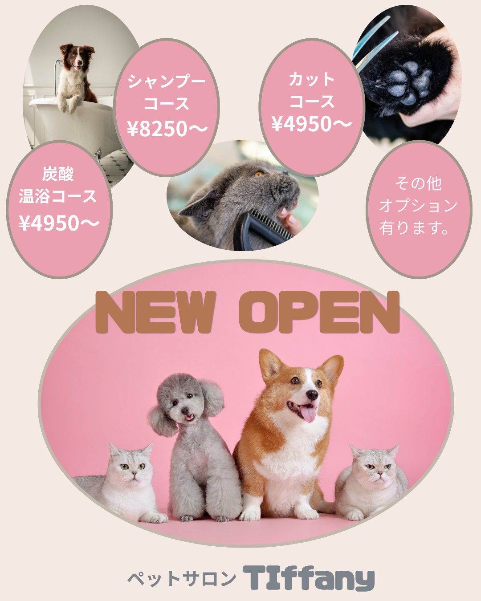

ペットサロン バナー制作

制作目的
新しくオープンするペットサロンを紹介し、サービスの内容や料金を分かりやすく 伝えながら、来店への興味を持ってもらうことを目的に制作しました。
ターゲット
犬や猫などのペットを飼っており、ペットの美容・ケアを検討している飼い主の方を 想定しています。
デザインの工夫
犬・猫の写真を使用し一目でペットサロンであることが伝わる構成にしました。
全体を淡いピンクとベージュ系でまとめ、丸みのあるデザインを取り入れることで、
やさしく親しみやすい雰囲気を表現しています。
また、それぞれのサービス内容と料金を猫の手をイメージしたパーツに分けて配置し、
情報を整理することで、料金やサービス内容を比較しやすくしました。
中央下部には「NEW OPEN」を大きく配置し、ペットたちの写真を組み合わせることで、
新店舗のオープンを印象的に伝えるデザインにしています。
制作時間
40分
使用ツール
Canva